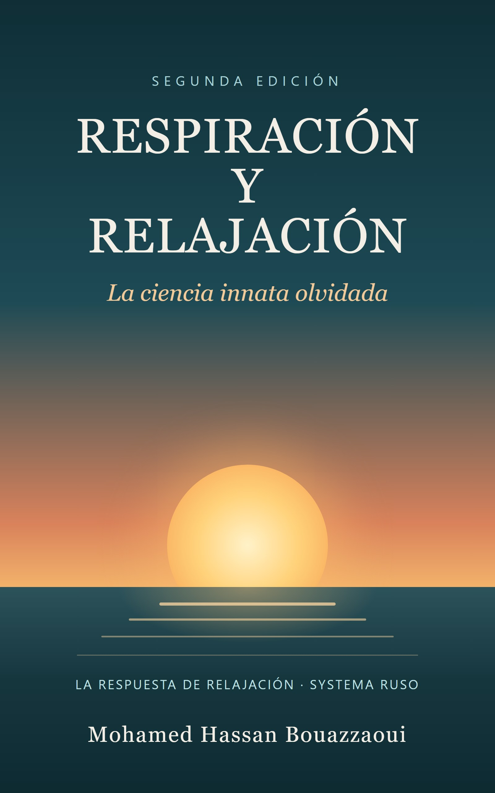

Respiración y relajación: la ciencia innata olvidada
Segunda edición, 2026
Traducido del inglés (Breathing and Relaxation: The Lost Innate Science)
© 2026 Mohamed Hassan Bouazzaoui. Todos los derechos reservados. Ninguna parte de este libro puede reproducirse ni distribuirse sin el permiso escrito del autor, salvo citas breves en reseñas.
Aviso de salud. Este libro tiene una finalidad exclusivamente educativa. No constituye consejo médico y no sustituye el diagnóstico ni el tratamiento de un profesional de la salud cualificado. Las prácticas descritas aquí complementan la atención médica, nunca la sustituyen. Consulte a su médico antes de empezar prácticas de respiración o relajación si está embarazada o si padece una enfermedad cardíaca, pulmonar, neurológica o psiquiátrica, o problemas de tensión arterial. Interrumpa cualquier ejercicio que le cause mareo, dolor o malestar.
Sobre los ejemplos. Las personas descritas en los ejemplos son retratos compuestos creados con fines didácticos; no describen a pacientes reales.
En un mundo que avanza a toda velocidad, el estrés se ha convertido en una parte inevitable de la vida. Desde las presiones del trabajo y de las relaciones hasta el bombardeo constante de información, nuestro cuerpo y nuestra mente funcionan a menudo a toda máquina. El estrés crónico pasa factura a la salud y se asocia con numerosos trastornos, desde la hipertensión y el síndrome del intestino irritable (SII) hasta las enfermedades autoinmunes y los problemas de salud mental.
¿Y si existiera una forma sencilla y estudiada científicamente de contrarrestar los efectos del estrés? Aquí entra en juego el trabajo del Dr. Herbert Benson. En la década de 1970, este cardiólogo formado en Harvard describió la respuesta de relajación: un mecanismo natural e innato que contrarresta la respuesta al estrés y favorece una relajación profunda. Sus investigaciones mostraron que prácticas como la meditación, la oración y la respiración controlada podían provocar esta respuesta, con efectos medibles en el cuerpo.
En el centro de la respuesta de relajación está la respiración. La respiración es única porque es a la vez una función automática y voluntaria. Al cambiar conscientemente nuestra forma de respirar, podemos influir en nuestro sistema nervioso y pasar de la reacción de lucha o huida a un estado de calma y equilibrio. Esta conexión entre respiración y relajación es central en muchas prácticas tradicionales, como el yoga, el taichí y el arte marcial ruso Systema.
El Systema, que significa «el sistema», es un enfoque integral del movimiento, la respiración y la relajación. Desarrollado en Rusia, hace de una respiración natural y sin esfuerzo la base de la resiliencia física y mental. Sus técnicas buscan reducir la tensión, agudizar la concentración y mantener la calma incluso en situaciones de mucho estrés.
Este libro explora la ciencia de la respuesta de relajación y el arte de la respiración del Systema. Ofrece herramientas prácticas para fortalecer el autocontrol, mejorar el bienestar y apoyar a las personas que viven con enfermedades crónicas. Tanto si quiere gestionar el estrés, cuidar su salud o simplemente vivir de forma más equilibrada, las prácticas de este libro pueden ayudarle a aprovechar el poder de la calma. El libro termina con un plan de inicio de 7 días para que pueda empezar a practicar hoy mismo.
¿Qué ocurre exactamente en nuestro cuerpo cuando vivimos una situación de estrés? Para entenderlo, debemos fijarnos en la fisiología del estrés y, en particular, en la reacción de lucha o huida, un mecanismo que evolucionó para ayudarnos a sobrevivir ante el peligro.
La reacción de lucha o huida es una reacción fisiológica automática ante una amenaza percibida, ya sea física, emocional o psicológica. La dirige el sistema nervioso simpático, una rama del sistema nervioso autónomo que prepara al cuerpo para enfrentarse al peligro o huir de él. Cuando el cerebro percibe una amenaza, envía una señal de alarma al hipotálamo, que activa el sistema nervioso simpático.
Esta activación desencadena una cascada de cambios hormonales, sobre todo la liberación de adrenalina (epinefrina) y cortisol por las glándulas suprarrenales. La adrenalina acelera el corazón, eleva la tensión arterial y aumenta la energía disponible al estimular la transformación del glucógeno en glucosa. El cortisol, a menudo llamado «hormona del estrés», aumenta la disponibilidad de glucosa y frena temporalmente las funciones que no son necesarias de inmediato ante un peligro vital, como la digestión y parte de la respuesta inmunitaria.
A corto plazo, la reacción de lucha o huida es muy útil. Agudiza los sentidos, aumenta la fuerza y la velocidad y nos prepara para afrontar amenazas inmediatas. Los problemas aparecen cuando esta reacción se activa con demasiada frecuencia o durante demasiado tiempo. El estrés crónico, es decir, la activación persistente de la reacción de lucha o huida, puede tener efectos duraderos en el organismo.
Cuando el cuerpo se inunda una y otra vez de hormonas del estrés, la salud puede resentirse. El estrés sostenido se asocia con una tensión arterial más alta, que sobrecarga el sistema cardiovascular. También se relaciona con molestias digestivas como el síndrome del intestino irritable, y la alteración prolongada del sistema inmunitario puede hacer al cuerpo más vulnerable a las infecciones y agravar las enfermedades autoinmunes, en las que el sistema inmunitario ataca los propios tejidos del organismo.
La reacción de lucha o huida no es solo hormonal: también implica estructuras clave del cerebro. La amígdala, un conjunto de núcleos con forma de almendra situado en lo profundo del cerebro, desempeña un papel fundamental en el procesamiento de las emociones, especialmente del miedo. Cuando detecta una amenaza, avisa al hipotálamo, que activa el sistema nervioso simpático.
La corteza prefrontal, la parte del cerebro responsable de la toma de decisiones y del pensamiento racional, ayuda a modular esta reacción. Idealmente, regula la amígdala y nos permite evaluar si una amenaza percibida es real. Sin embargo, bajo un estrés crónico, esta regulación puede debilitarse y provocar reacciones de estrés exageradas.
El estrés crónico crea un círculo difícil de romper. Las investigaciones sugieren que el estrés prolongado puede afectar a la estructura y al funcionamiento del cerebro, incluido el hipocampo, una región que participa en la memoria y en la regulación de las emociones. Esto puede dificultar la regulación emocional, lo que a su vez alimenta la respuesta al estrés.
El estrés crónico también puede favorecer conductas poco útiles, como comer en exceso, consumir sustancias o aislarse. Estas conductas generan nuevas fuentes de estrés y mantienen el círculo en marcha.
Comprender la fisiología del estrés es el primer paso para romper este círculo. En el próximo capítulo exploraremos el descubrimiento de la respuesta de relajación por el Dr. Herbert Benson, el opuesto biológico de la respuesta al estrés. Aprendiendo a activarla, podemos contrarrestar los efectos dañinos del estrés crónico y favorecer nuestro bienestar general.
A finales de los años sesenta y principios de los setenta, el Dr. Herbert Benson, cardiólogo e investigador de la Facultad de Medicina de Harvard, estudió los efectos fisiológicos de la meditación. Identificó una respuesta natural e innata del cuerpo a la que llamó respuesta de relajación, el opuesto biológico de la reacción de lucha o huida (Benson, Beary y Carol, 1974). Su trabajo aportó un marco científico para entender la relajación y herramientas prácticas para aprovechar sus beneficios.
La reacción de lucha o huida, impulsada por el sistema nervioso simpático, prepara al cuerpo para afrontar amenazas inmediatas aumentando la frecuencia cardíaca, la tensión arterial y las hormonas del estrés. La respuesta de relajación, en cambio, se asocia con el sistema nervioso parasimpático, que favorece la calma y la recuperación. Cuando se activa, el corazón y la respiración se ralentizan, la tensión arterial baja, los músculos sueltan su tensión y el consumo de oxígeno del cuerpo disminuye.
El Dr. Benson demostró que la respuesta de relajación no es una simple ausencia de estrés, sino un estado fisiológico activo que puede provocarse de forma deliberada. Así quedó claro que las personas pueden contrarrestar activamente los efectos del estrés crónico mediante prácticas concretas.
El Dr. Benson describió elementos sencillos que ayudan a provocar la respuesta de relajación. Pueden aplicarse a través de muchas prácticas, como la meditación, la oración, el yoga o incluso actividades repetitivas como correr o tejer. En sus trabajos posteriores destacó los dos primeros como los pasos esenciales:
El trabajo del Dr. Benson fue seguido por décadas de estudios sobre las prácticas de relajación y respiración. Los principales efectos observados son:
Hoy la respuesta de relajación está ampliamente reconocida como herramienta para gestionar el estrés. Enfoques afines se utilizan en programas como la reducción del estrés basada en la atención plena (MBSR) y la terapia cognitivo-conductual (TCC), así como en entornos clínicos para acompañar a las personas que viven con enfermedades crónicas. Es accesible para todos, sin importar la edad, la forma física o el origen, y no requiere ningún equipo especial.
En el próximo capítulo veremos el papel central de la respiración para activar la respuesta de relajación.
La respiración es una de las herramientas más básicas y poderosas que tenemos para influir en nuestro estado fisiológico y emocional. Es un proceso automático controlado por el tronco encefálico, pero también puede regularse de forma consciente. Esta doble naturaleza la convierte en una puerta de entrada a la respuesta de relajación.
El sistema nervioso autónomo (SNA) regula las funciones involuntarias del cuerpo, como la frecuencia cardíaca, la digestión y el ritmo respiratorio. Tiene dos ramas principales: el sistema nervioso simpático, que gobierna la reacción de lucha o huida, y el sistema nervioso parasimpático, que favorece el descanso, la relajación y la recuperación. La respiración controlada es una de las formas más directas de activar la rama parasimpática.
La respiración lenta, sobre todo con una espiración más larga, activa el nervio vago, el principal nervio del sistema parasimpático. El nervio vago funciona como una vía de comunicación entre el cerebro y el cuerpo que ayuda a ralentizar el corazón y favorece la relajación. Por eso la respiración diafragmática, en la que el aire llega hasta el abdomen, es tan eficaz para reducir el estrés.
Las investigaciones muestran que respirar despacio, alrededor de seis respiraciones por minuto, aumenta la variabilidad de la frecuencia cardíaca (VFC), un indicador de la capacidad del cuerpo para adaptarse al estrés (Russo, Santarelli y O’Rourke, 2017; Zaccaro et al., 2018). Una VFC más alta se asocia con una mejor regulación emocional y una mejor salud cardiovascular.
A menudo se describe la respiración como un puente entre el cuerpo y la mente. Una respiración lenta y rítmica envía al cerebro señales de seguridad, y prestar atención a la respiración nos devuelve al momento presente, rompiendo el ciclo de rumiación y preocupación que suele acompañar al estrés. Con el tiempo, esta atención consciente a la respiración nos ayuda a observar pensamientos y emociones sin dejarnos desbordar.
La relación funciona en ambos sentidos. Cuando estamos ansiosos o enfadados, la respiración se vuelve superficial y rápida; cuando estamos tranquilos, se vuelve lenta y profunda. Al tomar conciencia de esta conexión, podemos usar la respiración para regular nuestras emociones y crear un círculo virtuoso de calma.
Los estudios sobre prácticas como la respiración diafragmática y la respiración lenta pautada indican que pueden:
En la siguiente parte del libro exploraremos el enfoque del Systema ruso sobre la respiración y la relajación, con sus técnicas y su filosofía propias para alcanzar la calma y la resiliencia.
El Systema suele describirse como un arte marcial ruso «de combate y sanación». Es una práctica integral que da prioridad al movimiento natural, la relajación y el control de la respiración. A diferencia de muchas artes marciales basadas en técnicas rígidas y formas fijas, el Systema es fluido y adaptable, pensado para trabajar con los instintos y ritmos naturales del cuerpo.
El Systema se nutre de las tradiciones marciales rusas y de entrenamientos desarrollados para unidades militares y fuerzas especiales, que necesitaban un método práctico para situaciones de mucho estrés e imprevisibles. En su forma moderna se enseñó y popularizó a partir de los años noventa, en especial por Mijaíl Ryabko y Vladímir Vasíliev, y desde entonces se ha extendido por todo el mundo. Más allá de la defensa personal, sus profesores lo presentan como una forma de vida que integra entrenamiento físico, respiración, relajación y conciencia.
En esencia, el Systema se apoya en cuatro principios, a menudo llamados los cuatro pilares: respiración, relajación, postura y movimiento. Están interconectados y forman la base de toda práctica del Systema. Su filosofía sostiene que la verdadera fuerza nace de la armonía con uno mismo y con el entorno: cultivando la conciencia, la adaptabilidad y la calma, los practicantes aprenden a responder a los desafíos con soltura y eficacia, en el combate, en la vida diaria o bajo presión.
Aunque nació del combate, los principios del Systema se aplican a la vida cotidiana. Su énfasis en la respiración, la relajación, la postura y el movimiento lo convierte en una herramienta eficaz para gestionar el estrés, cuidar la salud física y fortalecer la resiliencia emocional.
El Systema también se basa en el conocimiento de uno mismo. Los practicantes aprenden a escuchar su cuerpo, a reconocer la tensión y el estrés y a soltarlos mediante la respiración y el movimiento. Esta conciencia se extiende a las emociones y reacciones, lo que hace del Systema no solo un arte marcial, sino también un camino de crecimiento personal.
Hoy practican Systema personas de todo tipo: artistas marciales, deportistas, profesionales de la salud y personas que simplemente buscan aliviar el estrés. Su enfoque suave y consciente del movimiento puede convenir a quienes se recuperan de una lesión o viven con dolor crónico, siempre que respete los límites del cuerpo y, si es necesario, el consejo médico. En profesiones de mucho estrés, como las fuerzas de seguridad, el ejército y los servicios de emergencia, su atención a la respiración y la relajación ayuda a mantener la calma y a decidir mejor bajo presión.
La respiración es la base del Systema, el puente entre el cuerpo, la mente y las emociones. No es solo un proceso fisiológico, sino una herramienta para cultivar la calma, la concentración y la resiliencia. Este capítulo explora la respiración nasal y diafragmática, presenta las técnicas clave del Systema y explica cómo reducen la tensión y mejoran la concentración.
1. Escalera respiratoria caminando. Camine a paso normal. Inspire por la nariz durante un paso y espire por la boca durante un paso. Luego inspire durante dos pasos y espire durante dos, después tres y tres, hasta un máximo cómodo (por ejemplo 8), y vuelva a bajar hasta uno. Si le falta el aire, vuelva simplemente a un escalón inferior.
2. Respiración en ráfagas. Tras un esfuerzo, o cuando sienta dolor o un aumento de tensión, respire en ráfagas cortas y rápidas: breves inspiraciones por la nariz y cortas espiraciones por los labios ligeramente fruncidos, como si apagara una vela. Continúe hasta que la respiración y el corazón se calmen y vuelva después a una respiración nasal lenta.
3. Movimiento guiado por la respiración. Elija un movimiento sencillo, como una sentadilla lenta. Deje que la respiración guíe: empiece a inspirar y luego comience a bajar; empiece a espirar y luego suba. Mantenga el movimiento lo bastante lento para que la respiración nunca se fuerce. El objetivo no es la fuerza, sino mantenerse relajado mientras se mueve.
La relajación es un principio central del Systema y refleja la idea de que la verdadera fuerza procede de mantenerse sereno y adaptable ante las dificultades. Las prácticas de relajación del Systema liberan la tensión física, cultivan la conciencia y favorecen una profunda sensación de paz interior.
La relajación muscular progresiva (RMP) libera de forma sistemática la tensión del cuerpo. En el Systema se combina a menudo con la respiración:
La RMP aumenta la conciencia corporal y facilita reconocer y liberar la tensión antes de que se vuelva crónica. Evite tensar cualquier zona lesionada o dolorida.
La atención plena consiste en prestar atención al momento presente sin juzgar; la conciencia es la capacidad de percibir el entorno interior y exterior. El Systema cultiva ambas mediante:
El Systema es más que un arte marcial: es una forma de vivir con conciencia, resiliencia y soltura. En la próxima parte veremos cómo combinar sus prácticas con la respuesta de relajación para un enfoque integral del bienestar.
En el mundo acelerado de hoy, la resiliencia emocional es una habilidad fundamental. La capacidad de regular las emociones, gestionar el estrés y mantener el autocontrol tiene un impacto real en la salud mental y física. Combinando la respuesta de relajación con las técnicas de respiración y relajación del Systema, puede construir herramientas poderosas de resiliencia emocional.
Los siguientes ejemplos son retratos compuestos creados para ilustrar cómo pueden usarse estas prácticas. No son casos de pacientes reales.
Situación. Juan, de 35 años, tiene frecuentes arrebatos de ira en el trabajo y en casa, que dañan sus relaciones.
Práctica. Practica cada mañana la respuesta de relajación con una palabra sencilla y usa la respiración continua en situaciones tensas.
Qué cambia. Con el tiempo aprende a notar las primeras señales de la ira, como el corazón acelerado y los músculos tensos, y a calmarse con la respiración antes de que sus emociones se desborden.
Situación. María, de 28 años, estudiante de posgrado, vive con una preocupación persistente que altera sus estudios y su sueño.
Práctica. Practica la respiración diafragmática y la respiración en ola de 10 a 15 minutos al día, repitiendo en silencio la palabra «calma».
Qué cambia. Al cabo de unas semanas se siente menos agobiada, usa la respiración en ola para mantener la concentración en los exámenes y duerme mejor.
Situación. David, de 42 años, bombero, sufre momentos de pánico en intervenciones de mucho estrés.
Práctica. Entrena la respiración del Systema, con respiración continua y retenciones cortas y controladas durante el entrenamiento, y practica la respuesta de relajación fuera del servicio.
Qué cambia. Se siente más sereno durante las emergencias y toma decisiones más claras bajo presión.
Las prácticas respiratorias pueden favorecer el bienestar emocional, pero no sustituyen la atención profesional. Si la ira, la ansiedad, el miedo o el bajo estado de ánimo son intensos, persistentes o afectan a su vida diaria, hable con un médico o con un profesional de la salud mental.
Las enfermedades crónicas como la enfermedad inflamatoria intestinal (EII), la fibromialgia y las enfermedades cardiovasculares suelen agravarse con el estrés. El estrés empeora los síntomas, y los síntomas, a su vez, aumentan el estrés. Usadas junto con el tratamiento médico, la respuesta de relajación y la respiración del Systema pueden ayudar a mejorar la calidad de vida.
Nunca abandone ni modifique un tratamiento sin el consejo de su médico. Informe a su equipo sanitario de las prácticas que utiliza, sobre todo si tiene una enfermedad cardíaca o pulmonar.
Incorporar la respuesta de relajación y el Systema a su rutina diaria puede cambiar su forma de vivir el estrés. Este capítulo propone un enfoque sencillo, paso a paso.
| Si usted es… | Pruebe esto |
|---|---|
| Un profesional muy ocupado | 1 o 2 minutos de respiración diafragmática en su escritorio; respiración en ola al caminar entre reuniones. |
| Madre o padre | Respiración consciente mientras su hijo duerme la siesta o juega; juegos sencillos de respiración con los niños. |
| Una persona mayor | Movimientos suaves y respiración adaptados a su movilidad; visualización guiada o RMP para la relajación y el dolor. |
| Un estudiante | Respiración 4-7-8 antes de exámenes o presentaciones; unos minutos de respiración del Systema en las pausas de estudio. |
Los deportistas, los equipos de emergencia y el personal militar se enfrentan a situaciones que exigen el máximo rendimiento físico y mental. La capacidad de gestionar el estrés, recuperarse rápido y mantener la concentración puede marcar la diferencia entre el éxito y el fracaso, y a veces entre la vida y la muerte.
La conexión mente-cuerpo está cada vez más reconocida en medicina. A medida que avanza la investigación, las prácticas de respiración y relajación ganan un lugar creciente junto a la atención convencional.
A lo largo de este libro hemos explorado el impacto de la respuesta de relajación y de la respiración del Systema en el bienestar físico, mental y emocional: desde la fisiología del estrés hasta las profesiones de alto estrés y la vida con una enfermedad crónica. Al activar el sistema nervioso parasimpático y reducir el estrés, estas prácticas nos ayudan a participar activamente en nuestra salud y a afrontar los retos de la vida con resiliencia.
El camino hacia una vida más sana, tranquila y plena empieza con una sola respiración. Así puede dar el primer paso:
La integración de estas prácticas en la medicina, la educación y la salud comunitaria es muy prometedora: un mundo en el que las personas tengan los medios para cuidar su salud, en el que el estrés se gestione a tiempo y en el que el bienestar sea una prioridad para todos. El poder de transformar su vida está en usted. Empieza con una respiración, un momento de quietud y el compromiso de cuidar su cuerpo, su mente y su espíritu. El camino empieza ahora.
Bastan de diez a quince minutos al día para empezar. Marque cada día completado: la constancia importa más que la duración.
| Día | Mañana (5–10 min) | Durante el día | Noche (5 min) |
|---|---|---|---|
| 1 | Respiración diafragmática, 5 min | 3 respiraciones lentas antes de cada comida | Respiración 4-7-8, 4 ciclos |
| 2 | Respiración diafragmática, 7 min | Respiración continua al caminar | Escaneo corporal |
| 3 | Respuesta de relajación con una palabra, 10 min | 1 minuto de respiración cuadrada antes de una tarea | Respiración 4-7-8 |
| 4 | Escalera respiratoria caminando, hasta 6 pasos | Pausa consciente: detectar y soltar la tensión | Relajación muscular progresiva |
| 5 | Respuesta de relajación, 10 min | Respiración en ola durante un esfuerzo sencillo (escaleras, cargar algo) | Gratitud: 3 cosas |
| 6 | Sentadillas guiadas por la respiración, 2 × 5 repeticiones lentas | Respiración en ráfagas tras un esfuerzo | Visualización guiada con respiración lenta |
| 7 | Su práctica favorita, 10–15 min | Anote los momentos en que más necesitó su respiración | Planifique su práctica de la semana siguiente |
Pasada una semana, quédese con lo que mejor le haya funcionado y practíquelo a diario. Muchas personas notan la diferencia tras dos a cuatro semanas de práctica regular.
Las referencias se citan en inglés, idioma en el que se publicaron los trabajos.
Mohamed Hassan Bouazzaoui escribió este libro para compartir herramientas sencillas, basadas en la ciencia, que cualquiera puede usar para respirar mejor, gestionar el estrés y vivir con más calma. Reúne la investigación sobre la respuesta de relajación y la sabiduría práctica del Systema.
En el sitio web del libro encontrará ejercicios guiados, actualizaciones y las ediciones del libro en otros idiomas. Sus preguntas y comentarios son siempre bienvenidos a través de la página de contacto.